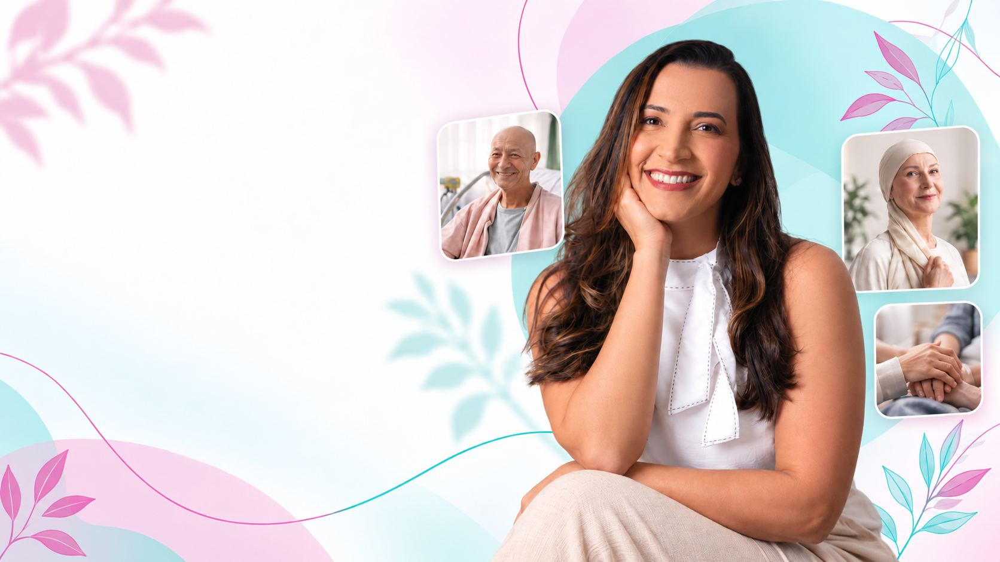
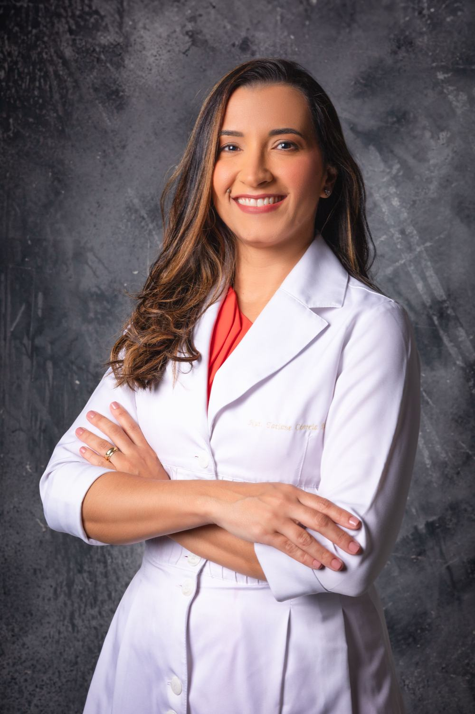
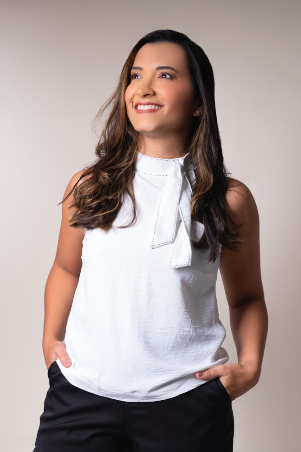
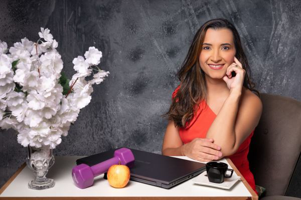

Enjoo que não passa
Só de sentir o cheiro da comida o estômago já vira. Os dias depois da sessão parecem não acabar.

Um plano alimentar feito para os seus sintomas e a fase do seu tratamento, entregue em até 48 horas, com 30 dias de acompanhamento pelo WhatsApp. Com quem trabalha com oncologia há mais de 20 anos.
Você fala direto com a equipe da Tati pelo WhatsApp.
Quase todo paciente em tratamento passa por pelo menos um desses pontos. E cada um deles pede uma estratégia alimentar própria.
Só de sentir o cheiro da comida o estômago já vira. Os dias depois da sessão parecem não acabar.
O paladar muda e aquilo que você gostava passa a ser difícil de engolir.
Comer vira um sofrimento e você acaba pulando refeições sem perceber.
A roupa fica larga, a energia some e até levantar da cama cansa.
Será que pode açúcar? E leite? Cada refeição vem acompanhada de dúvida e culpa.
Internet, grupos, parentes. Cada um fala uma coisa e ninguém olhou o seu caso de verdade.
A perda de peso e de músculo durante o tratamento não é só estética. Os estudos em nutrição oncológica mostram que ela está ligada a:
Com um plano feito para o seu momento, a alimentação deixa de ser mais um problema e passa a ser uma aliada do seu tratamento.
Quanto antes você começa, mais o seu corpo tem chance de chegar forte nas próximas sessões.
Quero começar agora
Há mais de 20 anos eu cuido da alimentação de pessoas em tratamento contra o câncer. Trabalho dentro de um hospital referência em oncologia na Bahia e, ao longo da carreira, já são mais de 40 mil pacientes atendidos.
Também estou do outro lado, ensinando. Sou professora de pós-graduação e formo outros nutricionistas em nutrição oncológica. Dou palestras em congressos e eventos da área e publiquei livros e artigos científicos.
Toda essa experiência me ensinou que não existe receita pronta. Existe escuta, estudo e um plano pensado para o que você está vivendo agora.
O mesmo conhecimento que a Tati usa no hospital e ensina para outros nutricionistas chega até você no atendimento online.

Rotina em hospital referência em oncologia na Bahia, ao lado de pacientes em quimioterapia, radioterapia e cirurgia.
Professora de pós-graduação e palestrante. É ela quem ensina outros nutricionistas a cuidar de pacientes oncológicos.

Consulta por vídeo, plano em até 48 horas e suporte pelo WhatsApp. De qualquer cidade do Brasil.
Uma conversa de cerca de 1 hora por vídeo para entender seu tratamento, seus sintomas e sua rotina.
Seus exames e as medicações do tratamento entram na conta antes de qualquer orientação.
Um plano possível de seguir, com estratégias para os sintomas que mais te incomodam.
Dúvidas e ajustes pelo WhatsApp sempre que o seu corpo pedir. Você não fica sozinha.
Seguindo seu plano alimentar consegui passar por 16 sessões de quimioterapia de uma forma bem leve, você é maravilhosa! Graças a Deus! Gratidão eterna!
Tati, você foi fundamental no meu processo do câncer de mama. Obrigada por todo o cuidado. Você é uma profissional diferenciada.
Conheci ela aqui pelo insta e hoje sou acompanhada por ela nessa minha jornada contra o câncer. Além do plano alimentar ela é muito atenciosa, sempre querendo saber como eu estou, principalmente na época em que estou em quimioterapia. Amando meu acompanhamento.
Você é um ser humano muito gentil, dedicada e competente. Sou grata por ter escolhido você para cuidar da minha filha neste momento tão difícil e delicado.
Um presente na hora certa. Ela me fez enxergar a alimentação de outro jeito, com uma doçura e um cuidado que eu nunca tinha recebido.
Fiz a escolha certa. Estou me sentindo cuidada. Uma alimentação fácil de seguir. Gratidão!
Relatos publicados espontaneamente pelas pacientes. Cada organismo responde de um jeito ao tratamento.
Nutrição oncológica é uma especialidade. O que funciona para uma pessoa saudável muitas vezes não funciona, e pode até atrapalhar, para quem está em tratamento. A Tati trabalha com pacientes oncológicos há mais de 20 anos.
É o contrário. Quanto antes a alimentação é ajustada, melhor o corpo atravessa o tratamento. Esperar pode significar perder peso e músculo e chegar mais fraca nas próximas sessões.
Faz, e a ciência mostra isso. A alimentação interfere na tolerância ao tratamento, na imunidade, na energia e na recuperação. Ela não substitui nenhum tratamento médico, mas fortalece o corpo para passar por ele.
O acompanhamento não termina na consulta. São 30 dias de suporte, com ajustes sempre que for preciso. Você não recebe um papel e fica por conta própria.
O atendimento é 100% online. Consulta, entrega do plano e suporte acontecem por vídeo e pelo WhatsApp. Não importa onde você mora.
Muitas famílias chegam até aqui buscando ajuda para quem está em tratamento. A Tati atende o paciente e orienta também quem cuida dele no dia a dia.
A consulta dura em média 1 hora. É um momento completo, em que o seu caso é analisado com calma e atenção.
É 100% online, por chamada de vídeo. Funciona para qualquer lugar do Brasil.
Se você tiver exames recentes, é bom levar. Se não tiver, você recebe orientação sobre o que pedir e o atendimento é feito com o que estiver disponível.
O plano alimentar é enviado em até 48 horas depois da consulta.
Não. A nutrição oncológica trabalha junto com o tratamento médico, nunca no lugar dele. O papel da alimentação é fortalecer o corpo, aliviar sintomas e melhorar a qualidade de vida durante o processo.
Sim, quando necessário. A suplementação é avaliada caso a caso, com base nos seus exames, sintomas e tratamento.
Sim. Muitas famílias entram em contato buscando ajuda para quem está em tratamento. São atendidos tanto pacientes quanto cuidadores.
O atendimento é particular. Para saber valores e condições, é só chamar no WhatsApp.
Mais de 20 anos de oncologia e mais de 40 mil pacientes atendidos. Agora é a sua vez de ter um plano feito para o seu momento.
Quero agendar minha consultaAtendimento online para todo o Brasil.